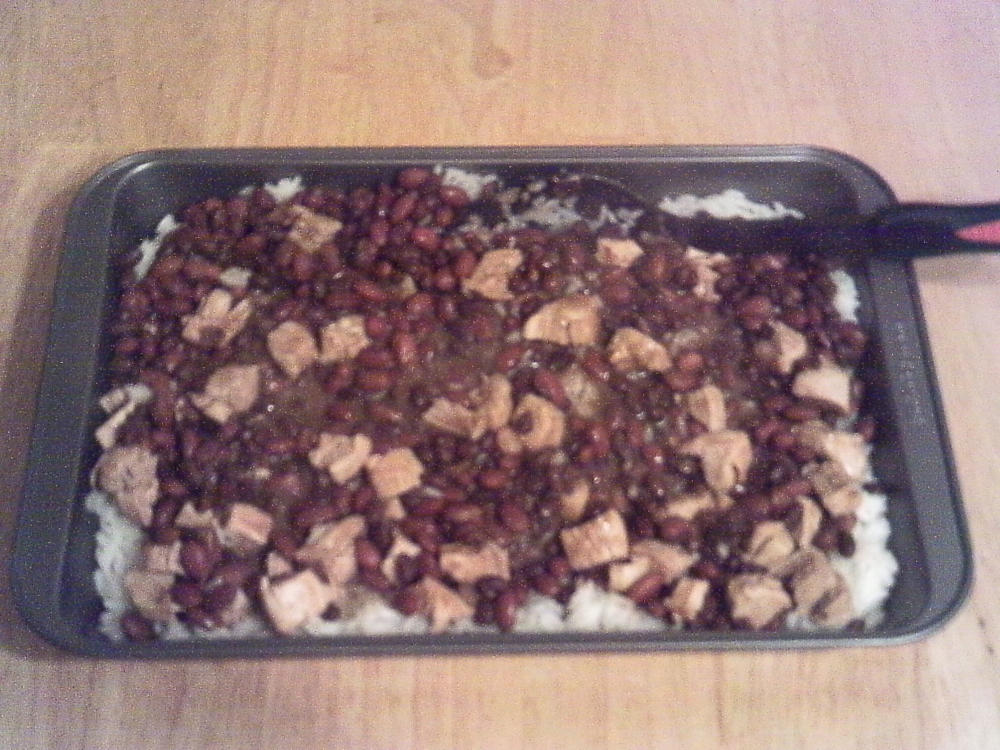

Snorlax Surprise

Ingredients
- 2 boneless skinless chicken breasts
- 1/4 cup ketchup
- 1/8 cup BBQ sauce
- 1/4 cup ranch dressing
- 1 can black beans
- 1 can red kidney beans
- 2 to 2 1/2 cups uncooked rice (or about 6-8 cups prepared)
Directions
Put chicken breast (thawed, frozen, cooked, it doesn't matter much)
into a frying pan. Add water until they are about 3/4 covered. Add ketchup,
BBQ sauce and ranch dressing and stir up. Cook until water is mostly boiled
out, stiring occasionally. Remove chicken and cut into about 1 in. chunks.
Put back in pan and add beans and cook for another twenty minutes on
medium low.
Meanwhile, prepare rice according to directions on package and place in a
13 by 9 inch pan, spreading until it forms a layer. Add the chicken and
beans mixture on top, then let cool for a few minutes.
Serve with shredded cheese on top or on tortillas with cheese as well.
Note: The 13 by 9 inch pan is not necessary, the parts can be mixed in
a bowl just as easily.
Recipie From: Snorlax